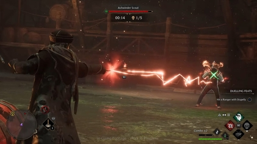

Hogwarts Legacy
Hogwarts Legacy is a 2023 action role-playing game developed by Avalanche Software and published by Warner Bros. Games under its Portkey Games label. The game is part of the Wizarding World franchise, taking place a century prior to the events chronicled in the Harry Potter novels. The player controls a student enrolled in the Hogwarts School of Witchcraft and Wizardry who learns to wield an array of magical abilities and objects. With the assistance of fellow students and professors, the protagonist embarks on a journey to unearth an ancient secret concealed within the wizarding world.
Following their acquisition by Warner Bros. in 2017, Hogwarts Legacy marks the first release from Avalanche unrelated to Disney Interactive Studios and its products. Development commenced in 2018, while pre-release gameplay footage was leaked onto the internet in the same year. The storyline was designed to take place in a period untouched by established Wizarding World characters, offering players the opportunity to immerse themselves in their own distinct universe.
The game garnered significant anticipation upon announcement in 2020. Prior to its release, it attracted controversy due to Harry Potter creator J. K. Rowling's views on transgender people and accusations of including antisemitic tropes, leading to calls for a boycott. Following some delays, it was released on 10 February 2023 for PlayStation 5, Windows, and Xbox Series X/S, on 5 May 2023 for PlayStation 4 and Xbox One, and on 14 November 2023 for Nintendo Switch. The early-access period of Hogwarts Legacy resulted in record-breaking viewership on streaming platform Twitch, making it the most-watched single-player game of all time on the platform.
Within two weeks of launch, the game sold more than 12 million copies and generated $850 million in global sales revenue. As of May 5, 2023, its revenue reached $1 billion, and by the beginning of 2024, global sales totaled 24 million copies. Hogwarts Legacy received generally favourable reviews from critics, with praise for its combat, world design, characters, variety of content, and faithfulness to the source material, but criticism for its technical problems and lack of innovation as an open-world game.
Gameplay
Hogwarts Legacy is an action role-playing game played from a third-person perspective. It is set at Hogwarts School of Witchcraft and Wizardry and its surrounding areas, influenced by the Wizarding World franchise.[1][2] During character creation, the player can choose their character's appearance, gender, voice, and body type. They may also choose one of the four Hogwarts Houses.[3] As players progress through the game, their player character learns to cast spells, brew potions, and master combat abilities, eventually developing their own special combat style.[4][5] Through in-game challenges, the player character can earn experience points to gain levels, which allows the player to access and upgrade different spells, talents, and abilities. These challenges come in the form of combat, quests, and exploration. Player characters can establish friendships with non-player characters (NPCs). As these relationships grow, schoolmates become companions who can accompany players on their journey, expand their abilities, and offer unique companion quests as players learn their stories.[6] Each of the four Hogwarts Houses—Gryffindor, Hufflepuff, Ravenclaw, and Slytherin—also offers a unique common room; these rooms are only accessible for the player's current house chosen by the Sorting Hat.[7] Accompanied by the choice of house, the player receives different exclusive quests.[8] While house points for the four Hogwarts houses play a part in the game's plot, they are not influenced by player actions.[9]
Next to experiences in Hogwarts Castle, the player can explore related areas such as the magic village of Hogsmeade, Forbidden Forest, or the Room of Requirement.[10] Hogsmeade features establishments such as The Three Broomsticks Inn, a gathering place for villagers and students; the Hog's Head, an inn with a less favourable reputation; and Zonko's, a store selling joke merchandise.[11] The Room of Requirement features environmental customisation elements; players can modify the room with multiple objects as they progress through the game. It can be entirely personalised, and its architecture can be changed. The room is used to place and take care of utility items such as brewing stations and planting pots, which can also be customised. Some of the magical beasts can be held in a chosen "Vivarium", a separate place where the player takes care of them.[10] Players will be able to tame, care for, and ride different magical beasts, including hippogriffs and thestrals. Other interactable magical creatures include u nicorns, kneazles, and puffskeins.[12] Plants grown and acquired can be used in combat, such as mandrakes being used to stun enemies.[13]
As the game features open-world gameplay, players are able to explore the map as they please. The different areas present various activities and enemies, with certain aspects locked behind progression milestones in the main plot. During exploration, players have the option to obtain gear by searching for treasure chests. The Revelio spell supports the player's exploration by acting as a scanning tool to discover secrets.[14] To travel around the map, players can choose between various options. Players may use Floo Powder to fast travel, or can fly across the map with a broom after participating in flying class.[15][16] Attending classes is one of the main elements of the game. Classes will be attended as a part of the story, advancing gameplay mechanics.[17] Progressing through the game causes the interior and exterior of the castle to change visually and match the seasons.[18]
Synopsis
Settings and characters
Hogwarts Legacy is set in the late 1800s, taking place in several Wizarding World locations such as Hogwarts Castle, Hogsmeade, and the Scottish Highlands.[1][10] The player takes on the role of a student (voiced by Sebastian Croft or Amelia Gething) starting their studies at Hogwarts in the fifth year.[19][20] The player character possesses the power to control a mysterious ancient magic and holds the key to an "ancient secret" that threatens the stability of the wizarding world. Their mission is to discover the reasons behind the resurgence of this forgotten magic and those who are trying to harness its power.[21]
The player encounters various characters in the game, with the most relevant being their professors and fellow students. Professor Eleazar Fig, a wizard who teaches magic theory at Hogwarts, is a central ally throughout the player's adventure.[22][23] Other characters the protagonist meets include Hogwarts students Amit Thakkar (Asif Ali) and Everett Clopton (Luke Youngblood), Professors Onai (Kandace Caine) and Shah (Sohm Kapila), as well as headmaster Phineas Nigellus Black (Simon Pegg) and Professor Matilda Weasley (Lesley Nicol).[19] The protagonist is also able to build friendships with fellow students Natsai Onai, Poppy Sweeting, and Sebastian Sallow, who take part in the protagonist's journey as companion characters.[6] Antagonists featured in the game include Ranrok, the leader of a goblin rebellion, and Victor Rookwood, the leader of a group of Dark Wizards.[24]
Plot
The protagonist receives a letter from Professor Weasley, which confirms their attendance at Hogwarts School of Witchcraft and Wizardry as a fifth-year student and assigns Professor Fig as the protagonist's mentor. Fig escorts the protagonist from London to Hogwarts via a flying coach. While investigating an unknown artefact, a dragon attacks them, prompting the two to reach for a Portkey hidden inside the artefact that teleports them to Gringotts. Using the Portkey to enter an old vault, the protagonist learns they can see traces of ancient magic. The duo is confronted by a hostile goblin named Ranrok before escaping to Hogwarts, where the protagonist is sorted into one of the four houses.
The protagonist learns various spells during classes and goes on a trip to Hogsmeade with a companion, where a troll sent by Ranrok attacks them and is defeated by them. The protagonist also sneaks into the library and finds a book with missing pages. While Professor Fig studies the book, the protagonist locates the missing pages and finds a secret room below Hogwarts known as the Map Chamber, where they later visit several times with Fig and talk to the portraits of four deceased Hogwarts professors who refer to themselves as the "Keepers", whose goal is to protect the secrets of ancient magic from the wizarding world.
To reveal the secrets of ancient magic, the protagonist completes four trials left by the Keepers. The trials feature complicated puzzles and dangerous tasks that require the skills the protagonist has acquired, each leading to a Pensieve, a magical device used to store and review memories. The protagonist learns from the memories that Isidora Morganach, a Hogwarts student who became a professor with abilities similar to the protagonist, was in conflict with the Keepers and left behind a hidden repository of ancient magic after using it to extract negative emotions, particularly from her suffering father. The Keepers realised that Isidora was inhaling the extracted emotions to increase her own power and failed to dissuade her, forcing one of them to eliminate her with the Killing Curse. Through their other adventures, the protagonist also learns that Ranrok, the leader of an ongoing goblin rebellion against wizards, seeks to find the repository and exploit it for his own ends. To locate it, he collaborates with a group of dark wizards led by Victor Rookwood, a descendant of one of the Keepers.
After the protagonist completes all trials, they receive one final task from the Keepers: to create a special type of magic wand from the artefacts found at the Pensieves. Professor Fig sends the protagonist to Gerbold Ollivander, the wandmaker, in order to craft the special wand. As the protagonist leaves Ollivander's, they are ambushed by Victor, who proposes an alliance against the goblins. The protagonist refuses, resulting in a battle in which the protagonist manages to defeat him. Shortly after, the protagonist and Professor Fig find the repository intact, and the protagonist makes their choice between keeping the magic sealed away or absorbing the power for themselves. Ranrok then locates Isidora's repository and absorbs the ancient power, transforming himself into a dragon. Fig is mortally wounded, and the protagonist battles the dragon, ending the goblin rebellion by destroying Ranrok and doing as they chose earlier. Regardless of their choice, Fig dies, and Headmaster Black and Professor Weasley hold a eulogy in honour of him.
The protagonist returns to finish regular school studies, as the end of the school year is leading to the O.W.L. exams. They also continue to explore the castle's surrounding areas and go through adventures with companions Sebastian Sallow, Poppy Sweeting, and Natsai Onai if they haven't completed them already. The journey ends with Professor Weasley awarding the protagonist 100 house points for the extraordinary adventure, which ultimately leads to a win of the House Cup for their respective house.